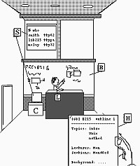

- Classroom Material: Outline, Source Code, Slides
-
The classroom material consists of:
- Lecture outline
- Sample programs
- Listings of sample programs
- Blackboard images/Slideshow
- Printout of slideshow
The material has been used for two-hour classes.
The lecture outline and code follow the topics
in the text closely but not exactly.
In this section, I'll explain what my own classes look like
and how I use the teaching material.
| Here is a student view of my class |
|  |
H Everyone gets handouts
containing an outline of the
class and copies of all sample programs.
L I explain the ideas, demonstrate
and write programs
B I write on the blackboard.
S,C I write, edit, compile, and
run programs in a computer
with the screen image projected for the class to see.
|
- Class Outline
-
The outline is a one-page agenda for the class.
The outline includes the main topic for the class,
the main examples, and the sequence of ideas, questions, and
answers. Students and teachers both know what to expect
and where they are going.
The lecture outlines are in the "handouts" directory in
files called outline##.pdf, outline##.txt ,
and outline##.tr.
A typical outline looks like
this one
from class 3.
The class outline corresponds to the sequence of topics
and images on the lecture slides. See below for information
about the slides.
- Sample Code
-
During class, I write programs that demonstrate what
Unix does, how programs work, and how to use system calls.
The students receive printed copies of the source code to
all those programs. They can look at them before class starts,
write notes during class, and review them later.
Many students use them as their main notepad.
The sample program printouts are in the "handouts" directory in
files called samples##.pdf, samples##.txt ,
and samples##.tr.
A typical page of sample programs looks like
this one
from class 3.
The actual programs, in source form, are in the directory
called "code".
These are the files you can copy to your machine and
use during lecture if you plan to compile and run programs
during class. They are similar to many programs in the
book.
- Other Handouts
-
In addition to the class outline and sample code listings,
some lectures have other handouts. These documents provide
extra explanations or illustrations of class topics.
- Blackboards and Slideshows
-
I write on the blackboard during class. Much of the
narrative of the lecture is written on the blackboard.
I have included
these blackboard images in the form of slideshows.
The slideshows come in HTML and PowerPoint versions.
The blackboard images use chalk color font on a blackboard
color background. If you don't like that color scheme, the
slideshows also come in a whiteboard version, with black
font on white background.
If you prefer to make your own slides with nicer graphics
and your own labels and text, you can use the clipart
provided for each chapter. Each chapter has a clipart
section that contains full-color, computer-rendered
versions of all the images in the book. You can paste
these images into any presentation program, add your
own labels, arrows, and text, to build your own version.
If you base your work on the slides provided, you can
do a new lecture pretty quickly.
I used the clipart images to make HTML slides for chapters
1 and 15.
- Page of Slides
-
The slides directory also has a subdirectory called "onepage"
which contains all the slide images
in one document. Students often print this out before class
and use it to follow along, adding notes, to the lecture
images. For example, the onepage version for
directory of class 10 looks like
this.
- File Format
-
Class outlines and sample code handouts are written using troff
formating tags. You can convert the file into Postscript
or pdf with standard Unix tools.
To convert a file into Postscript using groff, do this:
groff -Tps XXX.tr > XXX.ps
If you do not have groff (which is free software) you might
have troff; many versions of Unix include troff.
If you want to to convert that Postscript file to pdf format,
you can use the ghostscript program, freely available
for Unix and some other platforms. Use this command
gs -sDEVICE=pdfwrite -sOutputFile=XXX.pdf -q -dNOPAUSE - < XXX.ps
The manual explains what it all means. gs can also convert
Postscript files into many other formats.
- Classes and Text
-
The classes do not cover all the material in the text.
The classes sometimes offer slightly different approaches to the
material. Some of the class examples are simpler than ones in
the text because people have less time to absorb complex
programs in class.
|